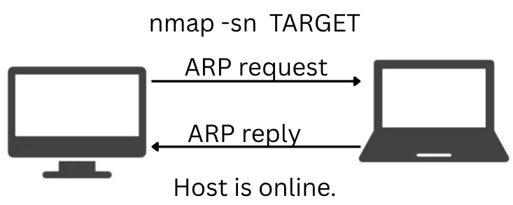
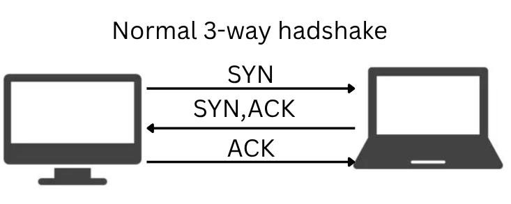
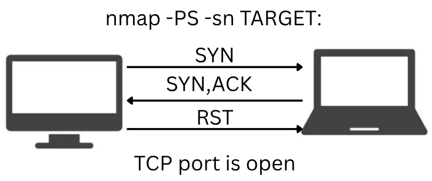
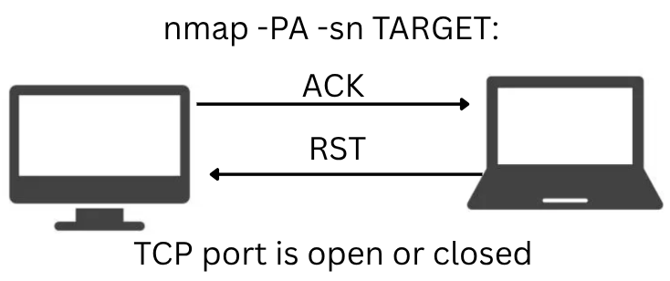
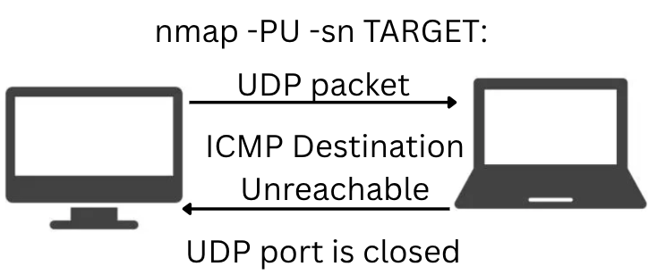

nmap live host discovery
nmap is an open source tool used for network mapping, live host discovery, port scanning and even operating system and service version detection. nmap is an enumeration tool. enumeration is the process of acquiring as much information
about the target and its network as possible. the more information we have, the easier it is to find vectors of attack.
discovering live systems is essential. nmap's default behaviour is to first find the hosts, then scan their target's ports. we do not want to do the port-scanning now, because it generates too much noise and takes too much time.
to disable port-scanning, we use -sn.
also, by default, it uses reverse-DNS lookup on live hosts. this is beneficial as it can reveal a lot of information about the target, but it also is time consuming and less stealthy.
to disable reverse-DNS lookup, we use -n; to force it even on offline targets, we use -R.
there are many ways to specify the targets:
- subnet:
192.168.1.0/24 will scan the whole subnet
- range:
192.168.1.0-4 will scan 5 IPs
- file:
-iL file.txt will scan the list of IPs provided in the file(one ip on every row, no delimitator)
- list:
192.168.1.0, 192.168.1.64, 192.168.1.128 will scan the 3 IPs
to list all IPs that will be scanned, we use -sL.
[tufescu@laptopdragos ~]$ nmap -sL 192.168.1.0/30
Starting Nmap 7.97 ( https://nmap.org ) at 2025-09-06 02:11 +0300
Nmap scan report for 192.168.1.0
Nmap scan report for 192.168.1.1
Nmap scan report for 192.168.1.2
Nmap scan report for 192.168.1.3
Nmap done: 4 IP addresses (0 hosts up) scanned in 0.53 seconds
host discovery using ARP
ARP scan is only possible if on the same subnet as the target. nmap sends an ARP query. a host that replies to the query is up. we expect to see many ARP queries when
scanning a network. this scan can be triggered with -PR.

[tufescu@laptopdragos ~]$ nmap -PR -sn 192.168.1.0/24
Starting Nmap 7.97 ( https://nmap.org ) at 2025-09-01 00:59 +0300
Nmap scan report for 192.168.1.1
Host is up (0.00041s latency).
MAC Address: ##:##:##:3C:69:50 (######## ################# Technologies)
Nmap scan report for 192.168.1.2
Host is up (0.10s latency).
MAC Address: ##:##:##:F4:B8:49 (Unknown)
Nmap scan report for 192.168.1.3
Host is up (0.10s latency).
MAC Address: ##:##:##:5D:45:4C (#### ######## Appliances, OF #####)
Nmap scan report for 192.168.1.5
Host is up (0.100s latency).
MAC Address: ##:##:##:1C:58:5C (Espressif)
Nmap scan report for 192.168.1.10
Host is up (0.11s latency).
MAC Address: ##:##:##:4F:16:87 (###### ########## San ve ###. A.S.)
Nmap scan report for 192.168.1.108
Host is up (0.12s latency).
MAC Address: ##:##:##:0A:26:7F (Unknown)
Nmap scan report for 192.168.1.11
Host is up.
Nmap scan report for 192.168.1.13
Host is up.
Nmap done: 256 IP addresses (8 hosts up) scanned in 5.02 seconds
# represents redacted information
host discovery using ICMP
ICMP is often blocked by the firewall or other security measures. however, we can still try using the protocol in our scans.
-PE - uses ICMP echo requests(ICMP type 8)(same as ping) and listens for ICMP ping reply(ICMP type 0) - often times blocked, to be tried first-PP - uses ICMP timestamp requests(ICMP type 13) and listens for ICMP timestamp reply(ICMP type 14) - stealthier, often not blocked, backup-PM - uses ICMP address mask query(ICMP type 17) and listens for ICMP address mask reply(ICMP type 18) - often blocked, rarely used
host discovery using
TCP
there are 2 types of scans with TCP packets. first one is the TCP SYN ping. when we send a SYN packet to a TCP port, it should replies with SYN/ACK if open and with
RST if closed. if, after sending a TCP packet on a TCP port, by default 80, we receive any response, it means that the host is up. we can use TCP SYN ping with -PS.
the second type of scan is TCP ACK ping. to use it we need to be privileged user. it works by sending an ACK packet to a TCP port, 80 by default. the port replies with
RST regardless of its state. if after sending the ACK packet we receive an RST response, it means that the host is up. we can use TCP ACK ping with -PA.
running sudo nmap -PS(or -PA) -sn 192.168.1.0 returns similar output to the other scanning methods. security measures like firewalls can drop or reject
specific packet types and cause differences in responses with different techniques.



UDP
sending a UDP packet to an open port is not expected to lead to a reply, but sending to a closed port returns ICMP port unreachable reply. nmap sends UDP packets to
high-number, most-likely closed ports and expects the ICMP reply. if it arrives, then the host is up.


Summary
-PR - ARP scan-PE - ICMP echo scan-PP - ICMP timestamp scan-PM - ICMP address mask scan-PS - TCP SYN Ping scan-PA - TCP ACK Ping scan-PU - UDP Ping scan-n - no DNS lookup-R - reverse-DNS lookup for all hosts-sn - host discovery only
go home